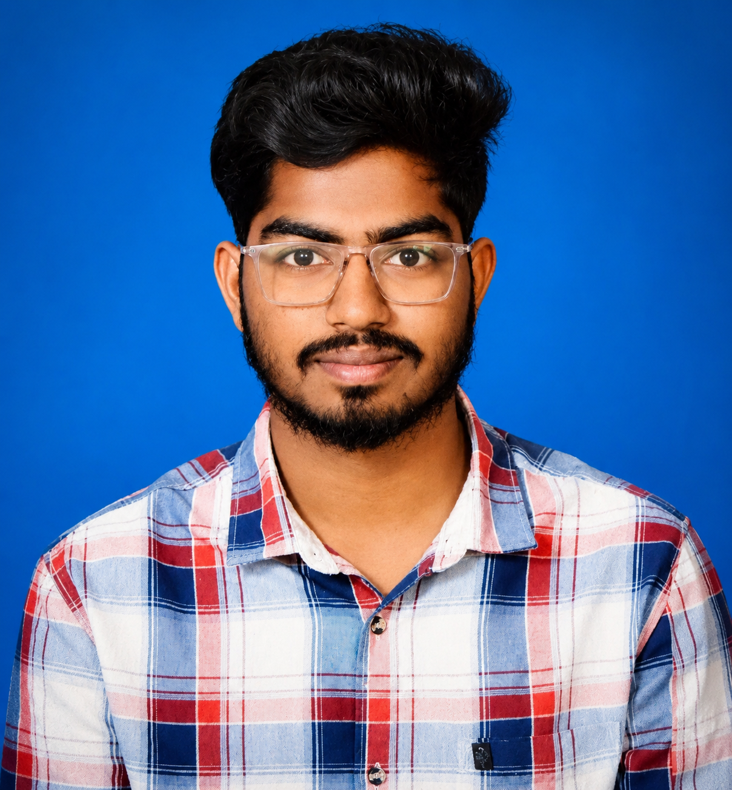

I am Krishnasai Doddapuneni, an aspiring
Python Full Stack Developer with a strong interest in web
development and software technologies.
I enjoy learning new programming concepts, building practical projects,
and continuously improving my technical skills.

Family Details
Father
My father, Ravi, is a farmer who has consistently supported my education
and motivated me to achieve my career goals.
Mother
My mother,is a homemaker who has consistently supported my education and
inspired me to work hard toward my goals.
Sibling
My sibling is currently studying for a Master's degree at Cardiff
University, demonstrating a strong commitment to academic excellence and
lifelong learning.
Hobbies
Learning new technologies
Coding and web development
Playing Cricket
Watching Tech Videos
Listening to Music
Daily Routine
Attend classes and learn new concepts.
Practice coding exercises.
Work on mini projects.
Watch tutorials and technical content.
Revise previously learned topics.
Consistency and healthy learning habits help me stay focused and
productive.
Favorite Technologies
Frontend
HTML
CSS
Backend
Python
Django
Database
MySQL
Tools
VS Code
GitHub
Favorite Stack: Python Full Stack Development with Django and
MySQL.
Skills Summary
A dedicated learner with strong problem-solving abilities, effective
communication skills, and a passion for web development. Continuously
improving technical skills and committed to building professional software
solutions.